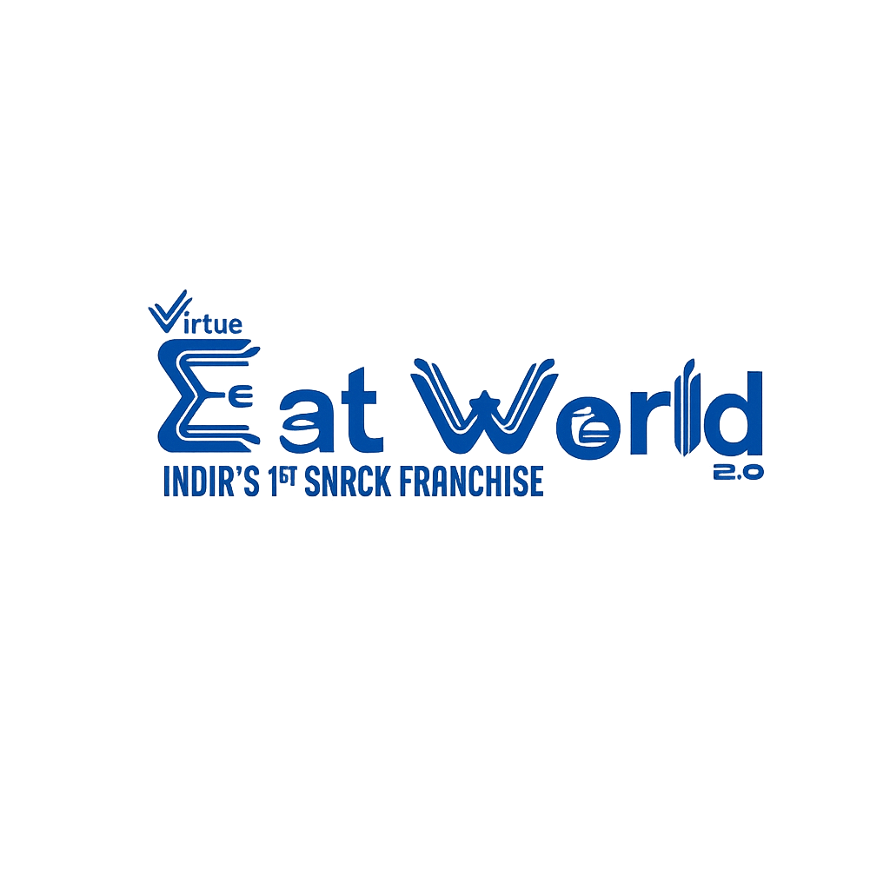

At Virtue Eat World, we serve fresh flavors made with passion and quality ingredients. Every visit is a delightful experience, bringing people together through great food and warm hospitality.

Virtue Eat World began in 2026 with a vision to bring people together through delicious food and memorable dining experiences. What started as a passion for serving fresh, flavorful dishes has grown into a place where quality, taste, and customer satisfaction come first. Every meal is prepared with care, ensuring that each visit leaves our customers happy and wanting to come back for more.
"We didn't set out to open a restaurant chain. We set out to make sure nobody in Coimbatore has a bad plate of chaat."
To serve food that's fresh, fairly priced, and prepared with the same hygiene standards you'd expect from a proper kitchen — without losing the soul of a stall.
To become the most trusted chaat and quick-bites brand in South India, giving every neighbourhood access to a Virtue Eat World counter within a 10-minute walk.
Every batch of pani is made with filtered, tested water — never straight tap.
Vegetables, chutneys, and puris are prepared fresh each morning and discarded, never reused, at day's end.
All prep stations are covered and staff wear gloves and caps at every outlet.
Surprise hygiene audits run monthly across every Virtue Eat World counter.
Our green and tamarind chutneys get their colour and tang from real ingredients, not dyes.
Every team member completes a food-safety orientation before their first shift.